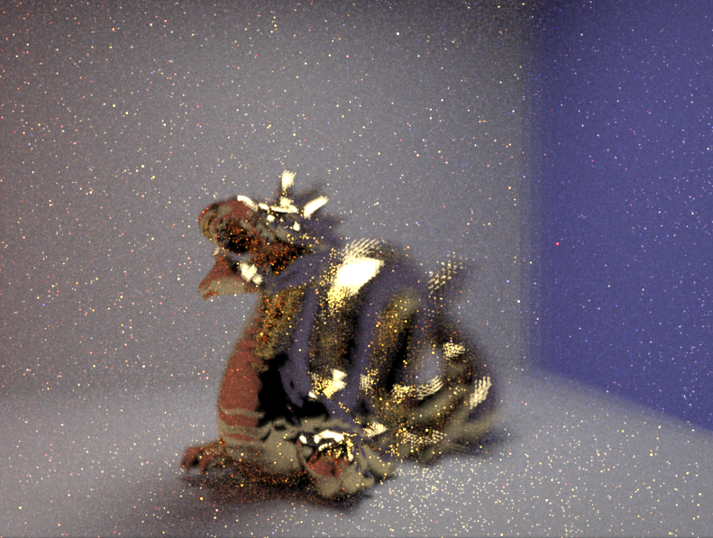
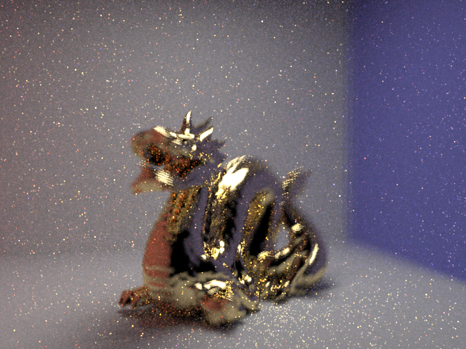
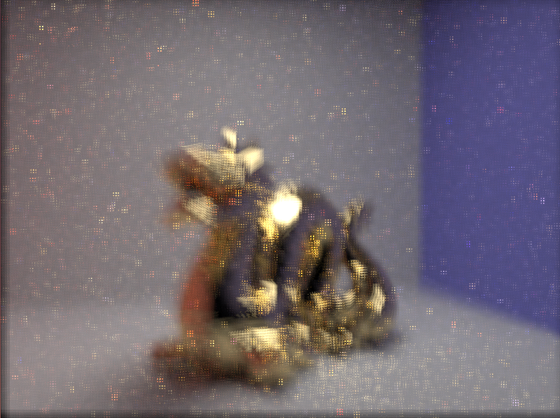
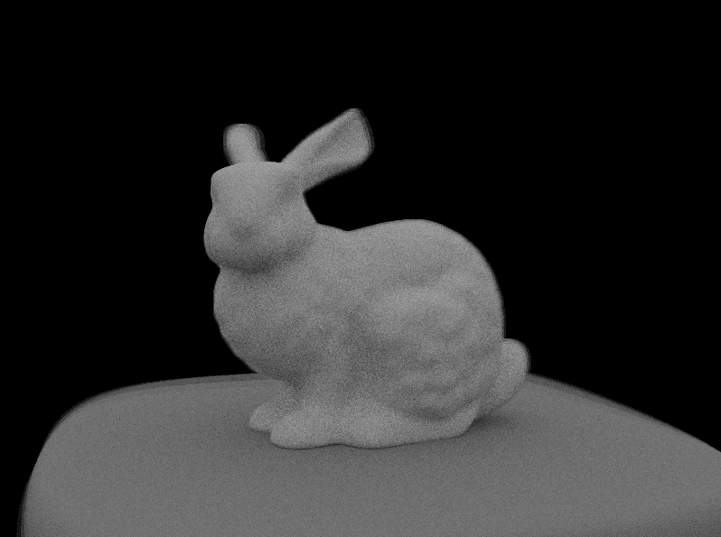
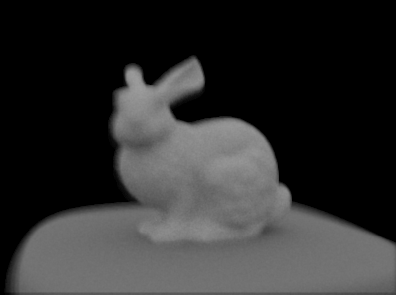
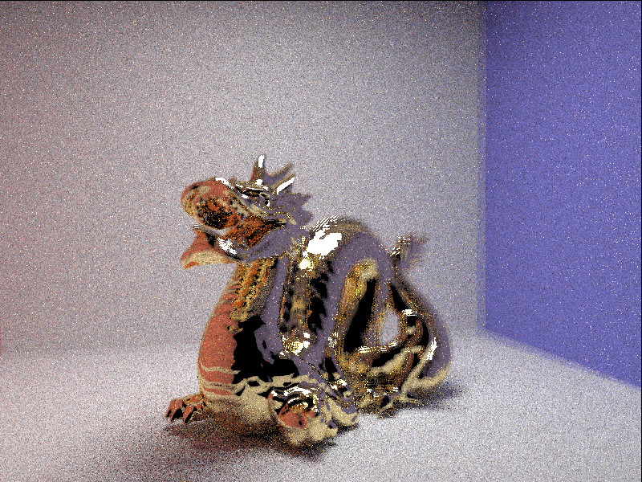
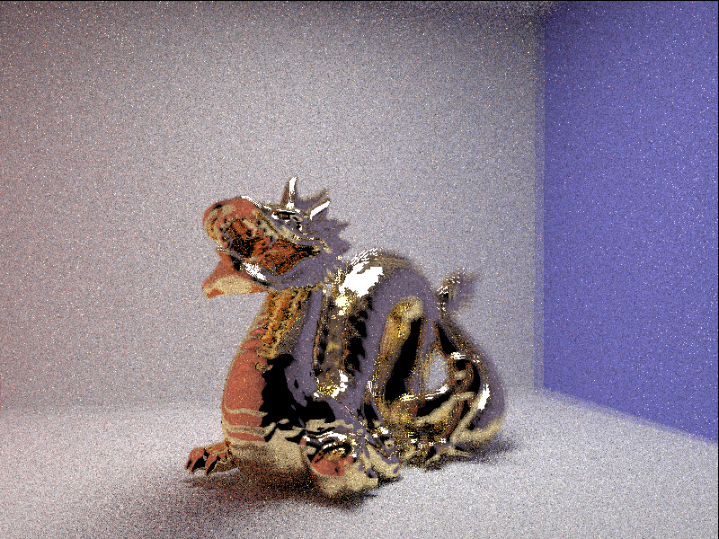
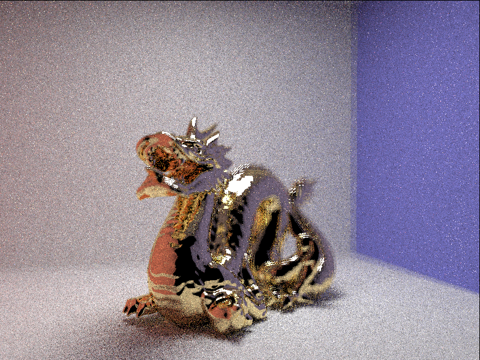

Members
Name: JIYUAN LU SID: 3033483733
Name: RENJIE SHAO SID: 3033530192
Name: NAN WEI SID: 3033530205
Abstract
During project 3, we implemented a renderer that can trace radiance to generate the 2D image. During this process, light from the environment or objects is received by the lens and drops into pixels on sensor. The traditional way is to store the average spectrum received by each pixel. However, directional information of light is lost during this process. In order to reconstruct the light field, which can be represented by the function from the direction of light to the spectrum, we change each pixel to a grid that stores the direction information.
With this extra information, our renderer can do refocusing, depth of field adjustment and camera position adjustment after rendering. All of these process can be finished in a few seconds, much faster than rendering. This technic definitely makes our images more editable.
Technical Approach
1. Store light field information
To store light field information, we change each pixel to a grid that stores the direction information.

In our model, microlens array is removed. Instead, we sample fixed positions on lens and store the radiance between each lens position and pixel pair.
As is shown in the picture below, in order to store the light field, we need to know 4 position variables and the corresponding spectrum. (u, v) is the lens sample position and (s, t) is the pixel grid position. So we can reconstruct the light fild easily from this 4D representation.

2. Refocusing
3. Depth of field adjustment
To adjust depth of field, we use a simple method called digitally stopping down the lens. To get deeper depth of field, we decrease the number of samples we use to generate the final image. In effect, we get smaller aperture. In our experiment, we take 7*7 samples on lens. By using the central sub-images, says 3*3 or 4*4, we generate an image with deeper depth of field. We can also do some pre-process, to sample a larger gird on lens. When rendering, we just use the central grid so that after rendering we can also decrease the depth of field by increase the number of sub-images to generate image.
Note that by extending depth of field in this way, we will get image with higher SNR because it wastes light of full aperture. To handle this problem, we could refocus each pixel to form the final image. This method will use all the information we received. However, since the accuracy of our depth detection algorithm is not high, we did not implement this approach.
4. Camera position adjustment
We use the same idea as depth of field adjustment in this part. In order to generate image with different camera positions, we use different sub-images. For example, if we want a image that taken by camera that is a little left than before, we can pick a sub-grid in the left of the full sub-images gird.
The problem is that, since we use CPU to render the image, and need to do a lot pre-process, if we render a lager sub-image grid, it will take really long time and consume too much memory. While with a relatively small sample grid, the difference between each camera position is not so obvious. An approach to solve this problem is to use GPU to render instead CPU. However, we need to rewrite all the skeleton if we choose to render by GPU. Since we have limited time, we do not decided to use this method.
Result
1.The effect of refocusing.
(1)CBdragon



(2)Rabbit


2.Changing depth of field.
(1)CBdragon
3.Camera postion adjustment.
(1)CBdragon


